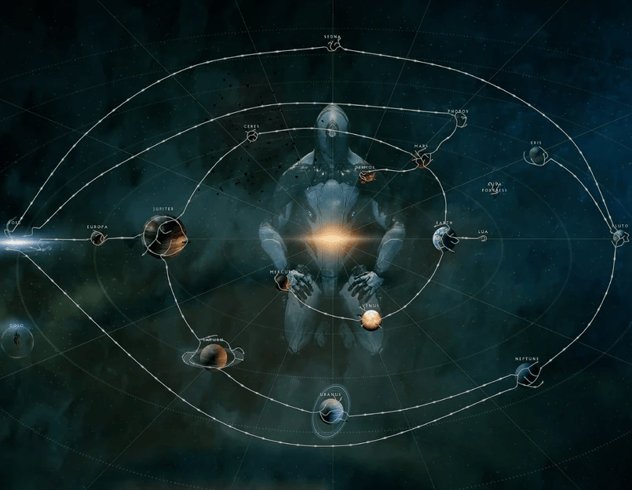

Warframe
Introduction and Gameplay
Warframe is a third person looter shooter RPG developed by Digital Extremes. Warframe, originally called dark sector began developement in 2000 and remained in developement up until its release in 2013. The game is free to play on all platforms but has an in-game market which allows you to purchase Warframes, weapons and cosmetics for in-game currency known as platinum.
Warframes main gameplay consists of completing missions, in which you fight hordes of enemies while trying to complete an objective such as rescuing a hostage, hacking a system or assassinating a target. Warframe allows for extremely fast paced movement and dynamic playstyles, with a mix of character abilities and hundreds of weapons, both ranged and melee. Before entering a mission, you can choose if you want your matchmaking to be public, allowing random players to join, or private, playing with only the people in your party. After a mission you will return to your orbiter, a ship that functions as your home base and includes your armory, fabricator and other systems to help you progress. From your orbiter you can access the Starchart, a map of the solar system.
Warframes
The games title, Warframe, refers to the in-game Warframes that act as the playable characters that you can gather, construct and build throughout the game. As of 2024 there are 58 unique warframes, with 103 total when including variants. When starting the game players are presented with a choice between three warframes to get for free. Excalibur, a melee focused typical front-line-soldier style warframe that can summon a signature sword, Mag, an AOE damage focused warframe and finally volt, a fast warframe focused on buffing itself and debuffing enemies for increased damage. After obtaining your first warframe you can gain others by gathering the resources to build all of their components and assembling in your orbiter or doing quests to get their components.
| Release Date | Warframe |
|---|---|
| 2012 | Excalibur, Mag, Volt, Loki, Rhino, Ash, Trinity, Ember |
| 2013 | Frost, Nyx, Banshee, Saryn, Vauban, Nova, Nekros, Valkyr, Oberon |
| 2014 | Zephyrm, Hydroid, Mirage, Limbo, Mesa |
| 2015 | Chroma, Equinox, Atlas, Wukong, Ivara, Nezha |
| 2016 | Inaros, Titania, Nidus |
| 2017 | Harrow, Gara, Khora |
| 2018 | Khora, Revenant, Garuda, Baruuk |
| 2019 | Hildryn, Wisp, Gauss, Grendel |
| 2020 | Protea, Xaku, Lavos |
| 2021 | Sevagoth, Yareli, Caliban |
| 2022 | Gyre, Styanax, Voruna |
| 2023 | Citrine, Kullervo, Dagath, Qorvex |
| 2024 | Dante, Jade, Koumei |
Progression
Alongside progressing through the games various missions and unlocking the avaliable planets, the players progress is tracked through Affinity. By killing enemies and completing objectives you will gain affinity for the weapons, warframes and companions used, allowing you to attach more upgrades too it. Your account also has an overall level or "Master Rank" which levels up through the culmnated affinity of all of your pieces of equipement. A higher Mastery Rank allows you to access more planets and weapons, however all warframes can be used from any mastery rank level if you've built them.